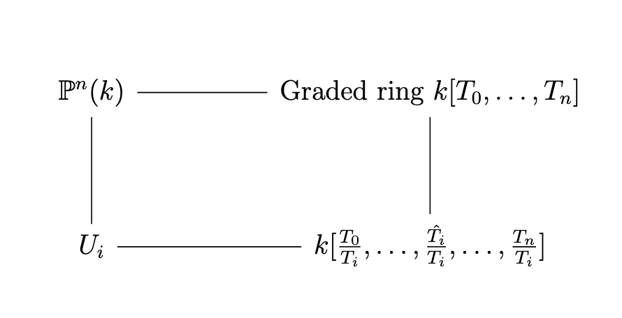
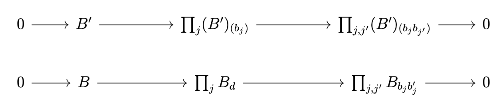

Algebraic Geometry Spring 2022
Table of Contents
1. Very short introduction on schemes
We start with the notion of schemes.
We have a few layers in order to build schemes: We move Topological Spaces \(\leftarrow\) Ringed Spaces\((X, \mathcal O_X)\) \(\leftarrow\) locally ringed spaces \(X, \mathcal O_X\) where sheafs of \(\mathcal O_X\) are local rings, where the left arrow is forgetful. Then, schemes are any locally ringed space which is locally an affine space. Furthermore, we must get some subcategory of affine schemes which is anti-equivalent to the category of rings via Spec.
1.1. The Spectrum of a ring as a locally ringed space.
We have some association \(A\) some ring \(\rightarrow \Spec(A)\) with some features:
- The basis for the topology are the opens \(D(a)\)
- If \(a = a'a''\) in \(A\) then
- \(D(a) \subset D(a')\)
- There is a canonical map \(A_a \leftarrow A_{a'}\) where \(\frac{(a'')^nx}{a^n} \mapsto \frac{x}{(a')^n}\)
Two remarks: the converse of 2.a does not hold; secondly, if \(M\) is a \(A\)-module, the map in 2.b extends to \(M_a \leftarrow M_{a'}\) and the maps are independent of the choice of \(a''\).
Lemma: The structure sheaf of \(\Spec(A)\): there exists a sheaf of rings \(\mathcal O_{\Spec(A)}\) such that
- For \(a \in A\) there exists a canonical isomorphism \(c_a: A_a \rightarrow \mathcal O_{\Spec(A)}(D(a))\).
- If \(a = a'a''\) then the following diagram commutes:

Pf: Use either stalks (Hartshorne) or the fact that \(D(a)\) (Stacks Project) are a basis for the topology and general facts about sheaves on bases.
Ex: Let \(X = (\Spec(A), \mathcal O_{\Spec(A)}\), and \(D(a_1) \cup D(a_2) = U \subset X\) open. Then we get the exact sequence
\begin{gather*} 0 \rightarrow \mathcal O_X(U) \rightarrow O_X(D(a_1)) \times O_X(D(a_2)) \rightarrow \mathcal(O)_X(D(a_1a_2)) \\ 0 \rightarrow kernel \rightarrow A_{a_1} \times A_{a_2} \rightarrow A_{a_1a_2} \\ 0 \rightarrow k[x,y] \rightarrow k[x,y,x^{-1}] \times k[c,y,y^{-1}] \rightarrow k[x,y,(xy)^{-1}] \end{gather*}The far map on the right takes \(F(U_1) \times F(U_2) \rightarrow F(U_1) \cap F(U_2)\) where \(s_1 \times s_2 \mapsto s_1|_{U_1 \cap U_2} - s_2|_{U_1 \cap U_2}\); that is, we take the difference.
Key algebra fact: if \(a_1, \dots, a_n\) generates the unit ideal, then \[ 0 \rightarrow A \rightarrow \prod_{i=1}^n A_{a_i} \rightarrow \prod_{i,j=1}^n A_{a_ia_j} \] is exact.
We can make an observation: the maps \(c_a\) determine isomorphisms \(A_\mathfrak p \rightarrow \mathcal O_{\Spec(A), \mathfrak p}\), the stalk of \(\mathcal O_{\Spec(A)}\) at the point \(\mathfrak p\), which by definition is the filtered colimit \(\colim_{\mathfrak p \in U \in \Spec(A)} \mathcal O_{\Spec(A)}(U)\). Note that we can take the colimit over \(D(a)\) and thus we get that there is a mapping from \(\colim_{a \in \mathfrak p} A_a\).
Corollary: \(\Spec(A), \mathcal O_{\Spec(A)}\) is a locally ringed space.
Def: A ringed space \(X, \mathcal O_X\) is a locally ringed space if every stalk of \(\mathcal O_X\) is a local ring. Let \((f, f^\#) : (X, \mathcal O_X) \rightarrow (Y, \mathcal O_Y)\) of ringed spaces. If \(f: X \rightarrow Y\) is continuous, you can think of \(f^\#: O_Y \rightarrow f_*\mathcal O_X\) (the push-forward of a sheaf) or as a map \(f^\#: f^{-1}\mathcal O_Y \rightarrow \mathcal O_X\) where \(f^{-1}\) is the pull-back (really, think of the push-back as an adjoint functor to the puhs-forward).
In some sense, think of \(f^\#\) as a rule that to each open \(U \subset X\) open and \(V \subset Y\) open with \(f(U) \subset V\) associates a map \((f^\#)^U_V: \mathcal O_Y(V) \rightarrow O_X(U)\) compatible with all restriction maps.
Thus, for all \(x \in X\) we get an induced map \(f^\#_x: \mathcal O_{Y, f(x)} \rightarrow \mathcal O_{X, x}\), where an element of \(\mathcal O_{Y, f(x)}\) is a “function” \(h \in \mathcal O_Y(V)\) determined on some \(f(x) = V \subset Y\) open, and then gets mapped to \((f^\#)^U_V(h)\) where \(x \in U \subset X\) open such that \(f(U) \subset V\).
Def: If \((X, \mathcal O_X)\) and \((Y, \mathcal O_Y\) are locally ringed spaces, then \(f, f^\#\) is a morphism of locally ringed spaces iff \(f^\#_X\) is a local homomorphism \(\forall x \in X\).
Lemma: Let \(\varphi: A \rightarrow B\) be a ring map. There is a morphism of locally ringed spaces \(\Spec(\varphi), \Spec(\varphi)^\#\): \((\Spec(B), \mathcal O_{\Spec(B)}) \rightarrow (\Spec(A), \mathcal O_{\Spec(A)})\) such that given \(a \in A\) the diagram

commutes. In fact every such morphism arises as such a mapping induced by a ring homomorphism.
Let \(X\) be a scheme, \(x \in X\). Then, there exists \(x \in U \subset X\) open such that \(U\) is an affine scheme; that is, \(x \subset U (\Spec(A), \mathcal O_{\Spec(A)})\); but we can consider the restriction \((\Spec(A_a), \mathcal O_{\Spec(A)})\).
Thus, we see that on a scheme the opens which are affine form a basis for the topology; (but note that intersections of affine opens need not be affine).
Ex: Projective space.
Consider an algebraically closed field \(k\) and a nonnegative integer \(n\). Then, the (classical) projective plane is simply \[ \P^n(k) = (k^{n+1} - \{0\})/k^* \] Alternatively, we can take \(\P^n(k)\) the union over subsets of points such that \(x_i \neq 0\), which yields a bijection from the affine \(n\)-space over \(k\).
Def: A closed subset \(E\) of \(\P^n(k)\) is a subset such that \(E \cap U_i\) is closed in the Zarisky topology of \(U_i - \A^n(k) = k^n\).
Ex: Say \(F \in k[T_0, \dots, T_n\) is homogenous of degree \(d\). Then \[ V_+(F) = E = \{(x_0:\dots:x_n) \in \P^(k)\} \text{ such that } F(x_0, \dots, x_n) = 0 \] is a closed subset: \[ V_+(F) \cap U_i = \{(a_1, \dots, a_n) \in k^n \mid F(x_0, \dots, 1, \dots, x_n) = 0\} \]
Equivalently, we may see that every closed \(E \subset \P^n(k)\) is of the form \[ E = V_+(F_1) \cap \dots \cap V_+(F(t)) \] for some \(F_1, \dots, F_t \in k[T_0, \dots, T_n]\). The idea here is to have some correspondence

Def: We define the projective space as a scheme over a ring \(R\) as \[ \P^n_R = \Proj(R[T_0, \dots, T_n]) = \{\mathfrak p \subset R[T_0, \dots, T_n] \text{ homogenous prime ideals with } \mathfrak p \not\supset (T_0, \dots, T_n)\} \]
Note that the classical point \((x_1:\dots:x_n)\) corresponds to a line \(p = (x_iT_j - x_jT_i)\).
Lemma: Fix \(0 \leq i \leq n\). There is a bijection \[ U_i = \{\mathfrak p \subset R[T_0, \dots, T_n] \text{ homogenous prime}, T_i \notin \mathfrak p\} \leftrightarrow \{\mathfrak P_o \subset R[\frac{T_0}{T_i}, \dots, \frac{T_n}{T_i}] \text{ prime}\} = \Spec R[\frac{T_0}{T_i}, \dots, \frac{T_n}{T_i}] \] where \[ \mathfrak p \mapsto \mathfrak p R[T_0, \dots, T_n, \frac{1}{T_i}] \cap R[\frac{T_0}{T_i}, \dots, \frac{T_n}{T_i}] \] such that we may think of \[ \P^n_R = \bigcup_{i=0}^nU_i = \bigcup_{i=1}^n \Spec R[T_0, \dots, T_n, \frac{1}{T_i}] \] and more generally, \(F \in R[T_0, T_n\) homogenous of poisitive degree can be thought of as \[ D_+(F) = \Spec(R[T_0, \dots, T_n]_{(F)}) \] where \(R[T_0, \dots, T_n]_{(F)}\) is the set of degree 0 elements of \(R[T_0, \dots, T_n, \frac{1}{F}]\), which is \(R[\frac{T_0}{T_i}, \dots, \frac{T^n}{T_i}]\).
Topological, if \(\Omega \subset R[T_0, \dots, T_n]\) is a subset of homogenous elemeents, then \[ V_+(\Omega) = \{\mathfrak p \in \P^n_R \mid \Omega \subset \mathfrak p\} \]
- These form closed subsets of a topology
- The basis for the topology are \(D_+(F) = \P^n_R - V_+(F)\)
- \(U_i = D_+(T_i) \cong \A^n_R = \Spec(R[\frac{T_0}{T_i}, \dots, \frac{T^n}{T_i}])\)
To identify the sheaf of rings, we can start with \(\mathcal O_{\P_R^n}(D_+(F) = R[T_0, \dots, T_n]_(F)\) and then extend exactly as in the case of affine schemes.
Aside: Why is projective space interesting? We are sort of adding things at infinity!
- \(P^0(k)\) is one point.
- \(P^1(k) = D_+(T_0) \sqcup V+(T_0)\) is a line with a point at infinity.
- \(P^2(k) = \A^2(l) \sqcup \P(k)\) is a plane with a line and a point at infinity.
Def: Let \(R\) be a ring. A projective scheme over \(R\) is a scheme \(X\) equipped with a morphism \(X \rightarrow \Spec(R)\) such that there exists an \(n > 0\) and a closed immersion \[ X \rightarrow \P^n_R \] of schemes over \(R\).
If \(e\) is a category and \(s \in \Ob(e)\), we can consider th category \(e/s\) of “objects over \(S\)”.
- Objects are arrows \(X \rightarrow S\)
Morphisms \(X/S \rightarrow Y/S\) are morphisms \(f: X \rightarrow Y\) in \(e\) such that the following diagram commutes:

- schemes over \(R\) are schemes over \(\Spec(R)\).
Fact: The category of schemes over \(R\) is what you get when you replace the definition of the category of schemes, replacing ring with \(R\)-algebra everywhere; that is, scheme over \(R\) are schemes \((X, \mathcal O_X\) such that \(\mathcal O_x\) is given the structure of a sheaf of \(R\)-algebras.
Def: A morphism \(f: X \rightarrow Y\) of schemes is said to be affine, resp. finite, integral, a closed immersion iff
- for all \(V \subset Y\) affine open the inverse image \(U = f^{-1}(V) \subset X\) is affine
- the morphism \(f|_U: U \rightarrow V\) of affine schemes corresponds to a ring map \(A \rightarrow B\) which is abitrary, resp. finite, integral, surjective
Lemma: Let \(f: X \rightarrow Y\) be a morphism of schemes; let \(Y = \bigcup V_j\) be an affine open cover. Then, \(f\) is affine, resp. finite, integral, a closed immersion iff the earlier definition holds for each \(V_j\).
Example: \(\Spec(B) \rightarrow \Spec(A)\) is a closed immersion \(\iff\) \(B = A/I\) for some ideal \(I \subset A\).
Example (Fermat hypersurface): As a scheme, \(X: T_0^1 + \dots + T_n^1 = 0\) in \(\P^n_R\) (topologically, \(V_+(T_0^1 + \dots + T_n^1\)). Now we have some \(X \rightarrow \P^n_R\) with \(X \cap D_+(T_i) = \) the closed subscheme of \(\Spec(R[\frac{T_0}{T_i}, \dots, \frac{T_n}{T_i}])\) by taking \((\frac{T_0}{T_i})^d + \dots + 1 + \dots + (\frac{T_n}{T_i})^d = 0\). Algebraically, we can take this to mean that \[ X \cap D_+(T_i) = \Spec(R[\frac{T_0}{T_i}, \dots, \frac{T_n}{T_i}]) / (\frac{T_0}{T_i})^d + \dots + (\frac{T_n}{T_i})^d) = \Spec(R[t_0, \dots, t_n]) / (t_0^d + \dots + 1 + \dots + t_n^d) \]
The upshot is that if \(I \subset R[T_0, \dots, T_n]\) is a graded ideal (homogenous ideal) then we can construct a closed subscheme \(V_+(I) \rightarrow \P_R^n\) associated to \(I\).
We have a couple of facts:
- \(V_+(I_ = \Proj(R[T_0, \dots, T_n]/I)\) as a scheme
- Every closed subscheme \(X \subset \P^n_R\) is equal to \(V_+(I)\) as a scheme for some \(I\)
Def: A morphism \(f: X \rightarrow Y\) of schemes is locally of finite type iff for all \(U \subset X, V \subset Y\) affine open \(f(U) \subset V\) the corresponding ring map \((f^\#)^U_V: \mathcal O_y(V) \rightarrow \mathcal{O}_X(U)\) as a ring map of finite type.
Lemma: If for all \(x \in X\), there is some \(x \in U \subset X\), \(V \subset Y\) affine open, \(f(U) \subset V\) such that if \((f^\#)^U_V: \O_Y(V) \rightarrow \O_X(U)\) is of finite type, then \(f\) is of finite type.
Proof: Let \(U \subset X, V \subset Y\) be affine open, \(f(U) \subset V\). We have the following steps:
- For all \(x \in U\) pick \(x \in U_x \subset X, V_x \subset Y\) affine open, \(f(U_x) \subset V_x\) and \((f^\#)^{U_x}_{V_x}: \O_Y(V_x) \rightarrow \O_X(U_x)\) finite type.
We may assume \(U_X \subset U\).
Proof: Write \(U_x = \Spec(B_x)\). Then we may pick \(b_x \in B_x = \O_X(U_x)\) such that \(x in D(b_x) \subset U_x \cap U \subset U_x\). But we know that the mapping \(\O_Y(V_x) \rightarrow B_x\) is finite type, and the mapping \(B_x \rightarrow \O_X(D(b_x)) = (B_x)_{b_x}\) is a finite ring map due to localization.
Write \(U = \Spec(B)\). We may assume \(U_x = D(b_x)\) for some \(b_x \in B\).
Proof: Pick \(b_x \in B\) such that \(D(b_x) \subset U_x \subset U\). Correspondingly, we have some mapping \(b_x \in B \mapsto \overline{b}_x\), so \(D(\overline{b}_x = D(b_x)\), so we get that \(B_{b_x} \cong (B_x)_{\overline{b}_x}\).
Write \(V = \Spec(A)\). Then, we may assume \(V_x = D(a_x)\) for some \(a_x \in A\).
Proof: Repeat steps 2, 3 but now on \(Y\) and use the fact that \(\varphi: A \rightarrow B\) satisfies that \(\Spec(\varphi^-1(D(a))) = D(\varphi(a))\)
Put everything together: for all \(x \in U = \Spec(B)\), we have the following diagram:

We have another algebra fact: \(A \rightarrow B\) ring map for all \(\mathfrak q \subset B\) prime there exists \(b \in B, b \not\in \mathfrak q\) such that \(A \rightarrow B_b\) finite type then \(A \rightarrow B\) is of finite type.
The ideal for the algebra fact is that \(S = \{b: B_b \text{ is finite type over } A\}\) generates the unit ideal in \(B\), so pick \(b_1, \dots, b_m \in S\) and \(c_1, \dots, c_m \in B\) such that \(1 = b_1c_1 + \dots + b_mc_m\). For each \(j\) we have that there is some \(b_{j_1}, \dots, b_{j_{n_j}}\) such that \(B_{b_j}\) is generated by \(b_j, \frac{1}{b_j}, b_{j_1}, \dots, b_{j_{n_j}}\). Set now \(B'\) to be the \(A\)-subalgebra of \(B\) generated by \(b_1c_1, \dots, b_nc_n, b_{j_i}\). Then, we have

Note: the above holds for locally of finite presentation, locally quasi-finite, flat, smooth, etale, unramified, lci, etc.
1.2. Fiber Products
Let \(e\) be a category. Consider a diagram in \(e\):
The fiber product of \(f\) and \(g\) is an object \(Y \times_S X\) of \(e\) together with morphisms \(Y \times_S X \rightarrow Y\), \(Y \times_S X \rightarrow X\) … TODO
Thm: The category of schemes has fiber products.
Proof: Omitted, but you can sort of turn the following remarks around!
Rmk: The category of schemes also has a final object, namely \(\Spec(\Z)\); it follows that all finite limits of schemes exist.
If we have affine schemes, \(X, Y, S\) then \(X \times_S Y\) is the spectrum of the tensor product:

Furthermore, suppose that we have opens \(U, V, W\) in the same situation:

Then, we have that \(V \times_W U = q^{-1}(V) \cap p^{-1}(U)\) as schemes! See Hartshorne for more details.
Warning! The topological space of \(Y \times_S X\) is not the fiber product of the topological spaces of \(X, Y, S\).
Example: \(S \in \Spec(R)\), \(\A^n_S = \A^n_R = \Spec(R[x_1, \dots, x_n])\). Then, \(\A^{n+m}_S = \A^n_S \times_S \A^m_S = \Spec(R[x_1, \dots, x_n] \otimes_R R[y_1, \dots, y_m])\)
We move on to the base change functor. Let \(\mathcal C\) be a category with finite products. The base change functor takes \[ \mathcal C / S \rightarrow \mathcal C / S', (X/S) \mapsto X \times_S S' / S' \]
Base change allows us to do things over a lot of different fields! You can take schemes over \(\Z\) to schemes over \(\C\), \(\Q\), \(\overline{F}_p\), etc, so we can do number theory or geometry or whatever.
Now we talk about scheme theoretic fibers in particular. Suppose that we have \(X\) a scheme over a ring \(R\), and we have a prime ideal \(\mathfrak p \subset R\) corresponding to \(s \in S \in \Spec(R)\).

Then, \(X_s\) is called the scheme theoretic fiber, and this construct can be generalized to a general scheme if we’d like.
Lemma: The map \(X_s \rightarrow X\) maps the topological space \(X_s\) homeomorphically onto the fiber \(f^{-1}(\{s\}) \subset X\)
Proof: On affince pieces we saw this with algebraic techniques. For general schemes take affine covers.
Separation axioms:
We say a morphism \(f: X \rightarrow S\) of schemes is separated iff the diagonal \[ \Delta_f: X \rightarrow X \times_S X \] is a closed immersion.
Lemma: A morphism between affines is separated.
Proof: Suppose you have \(A \rightarrow B\) giving \(X = \Spec(B) \rightarrow S = \Spec(A)\). Then, we have that \(X \rightarrow X \times_S X\) corresponds to \(\Spec(B) \rightarrow \Spec(B \otimes_A B\), which induces a map \(B \otimes_A B \rightarrow B\) which is surjective, so we get a closed immersion.
We now have access to a fun fact: if \(S\) is affine and separated, then the intersecion of affine opens of \(X\) is also separated.
Proof: Let \(U, U' \subset X\) be affine open. Then, \[ U \cap U' = \Delta^{-1}(pr_1^{-1}(U) \cap pr_2^{-1}(U')) = \Delta^{-1}(U \times_S U') \]
Example: \(\P^n_R\) is separated over \(R\).
| \(\P^1_\C\) | \(\P^1_\C\) |
| U0 = Δ-1(U0 × U0) | U0 × U0 |
| U0 ∩ U1= Δ-1(U0 × U1) | U0 × U0 |
| U0 ∩ U1 = Δ-1(U1 × U0) | U0 × U0 |
| U1 = Δ-1(U10 × U1) | U0 × U0 |
Def: A morphism \(f: X \rightarrow S\) of schemes is universally closed iff for TPDP
Theorem: \(\P^n_R \rightarrow \Spec(R)\) is universally closed.